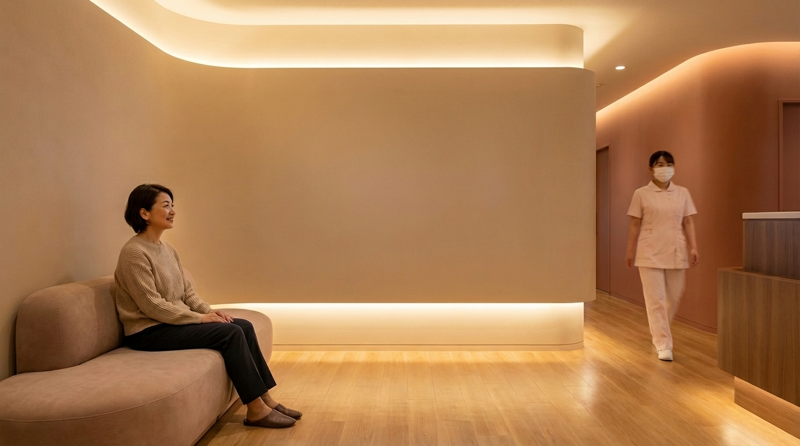

地上波はうるさい。YouTubeには規約の壁がある。DVDは飽きる。
その答えを、4K実写映像のサブスクリプションでお届けします。
施設によって課題は異なります。
あなたの現場に近いほうをお選びください。
音量を上げれば呼び出しの声がかき消され、下げれば高齢の患者さんには聞こえない。字幕をつけても根本的な解決にならない。
YouTubeの4K風景を流してみたものの、待たされている患者さんには逆効果のことも。「正解が見つからない」まま、とりあえずニュースに戻していませんか。
診療の質には自信がある。でも「待ち時間が長い」の一言がGoogleの星を下げる。待合室の体感時間を変える手立てがほしい。
チューナー内蔵テレビを置くだけで発生する受信契約。チューナーなしの構成に切り替えれば不要になります。
足腰が不自由で外出が叶わない方にも、桜や紅葉、海の景色を見せてあげたい。窓の外だけが「外の世界」になっていませんか。
チャンネル選びで入居者同士がもめることもある。かといって消すと静まり返る。テレビに代わる「ちょうどいい映像」が見つからない。
準備に時間がかかる割に盛り上がらない。季節の風景映像があれば、「あら、ここ知ってる」と自然に会話が始まる——そんな場面を作りたい。
桜を見て故郷を語り、秋祭りの映像で昔話が始まる。風景映像が自然な会話の呼び水になります。
「また機器の管理が増えるの？」
初期設定だけ済ませれば、あとはスタッフが触る必要は一切ありません。朝の電源も、季節ごとの映像の入れ替えも、すべて自動。
「音が問題にならない？」
風景映像は音量ゼロでも十分に機能します。診察の呼び出しや事務の声を邪魔しません。自然音を小音量で流すことも可能です。
「同じ映像の繰り返しにならない？」
春には桜、冬には雪景色。朝は日の出、夕方は夕焼け。150時間超のライブラリから今の季節・時間帯に合った映像が自動再生されます。
「院内ネットワークに影響しない？」
インターネットへの接続は一切行いません。映像はすべて専用機器の内蔵ストレージから再生。院内のセキュリティポリシーに影響を与えません。
北海道から鹿児島まで、日本の四季を記録しています。
全国100箇所以上の景勝地で撮影。四季・時間帯あわせて150時間超の映像ライブラリ。
地図データ出典：国土数値情報（国土交通省）
フォームまたはメールでご連絡ください。台数やご要望をお伺いします。
契約書と稼働スケジュール設定シートをお送りします。ご記入のうえ返送ください。
設定済みの再生機器を発送。モニタにHDMIケーブルでつなぐだけ。
初回の映像確認が終われば、以降はスタッフの手を煩わせません。
初月無料でご利用いただけます。映像の雰囲気を確かめてからご判断ください。
Monthly Subscription
税込 / 月
2台目以降 15%引き（同一住所・同一請求書に限ります）
※モニタ（4K HDR対応推奨）はお客様にてご用意ください
待合室で実証
がん外来117名を対象としたRCTで、テレビニュースでは気分に変化がなく、自然映像を流した群でのみ有意な改善が確認されています。
音なし可
視覚刺激のみでもリラックス反応（アルファ波の増強）が確認されています。音量ゼロの運用でも、待合室の空気を変える力があります。
回想
季節の風景は、介護現場で活用される回想法のきっかけになります。桜を見て故郷を語り、映像が会話を生みます。

YouTubeの利用規約では、個人的かつ非商業的な利用のみが許諾されています。クリニックや介護施設で映像を流す行為は、患者さんの満足度向上を目的とした事業活動の一環にあたり、商用利用として規約違反となります。広告表示や通信の不安定さ以前に、そもそも利用が認められていません。風景帖は商用利用を正規に許諾した映像のみを提供しており、著作権・利用規約の両面で安心してご利用いただけます。
地上波のワイドショーやニュースは音量の問題が避けられず、番組の内容もコントロールできません。風景映像は音量ゼロでも機能し、不快な内容が流れる心配もありません。チューナーを搭載しない構成のため、NHK受信料も不要です。
自然の風景映像は、テレビ番組と違い「見たくない人の邪魔にならない」という特徴があります。興味がある方は眺め、そうでない方は自然に視界に入る程度。押し付けにならない点が、待合室や共用スペースに適しています。
いいえ。すべて機器内のデータから再生します。Wi-Fiもインターネット回線も不要で、院内ネットワークに一切影響しません。
いいえ。すべて日本国内の景勝地で実際に撮影した映像です。風に揺れる木々、水面の反射、雲の流れなど、現地で撮影した本物の風景だけをお届けしています。
ありません。映像はすべて当社で撮影・編集し、著作権を保有しています。商用利用の許諾が含まれた状態でご提供しますので、安心してご利用いただけます。
4K液晶テレビ（HDR10対応）を推奨しています。一般的な待合室には55〜65インチが最適です。広いスペースには75インチ以上もご検討ください。有機EL方式は焼付き防止機能による意図しない輝度低下があるため、液晶方式をおすすめしています。
通常使用での故障には無償で交換対応いたします。お客様の過失による故障の場合は実費をご負担いただきます。
はい。曜日ごとに稼働時間帯を設定でき、診療時間や営業時間に合わせて自動で起動・スリープします。
はい。詳細は契約書にてご案内いたします。解約時は再生機器のご返却をお願いいたします。
再生機器のみで月額約200円程度です（24時間稼働の場合）。モニタの消費電力は含みません。
「うちの待合室に合うか見てみたい」——そんなご相談も歓迎です。
フォームまたはメールにてお問い合わせください。
通常2営業日以内にご返信いたします